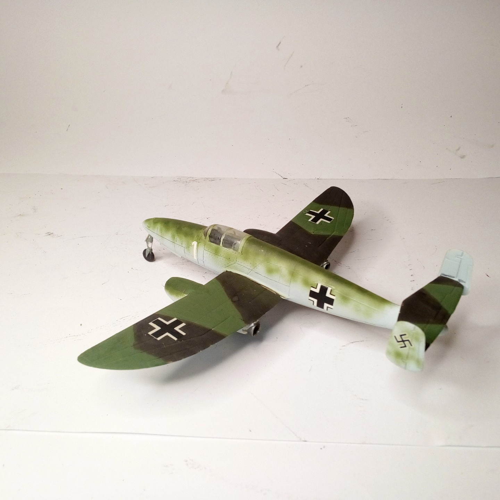
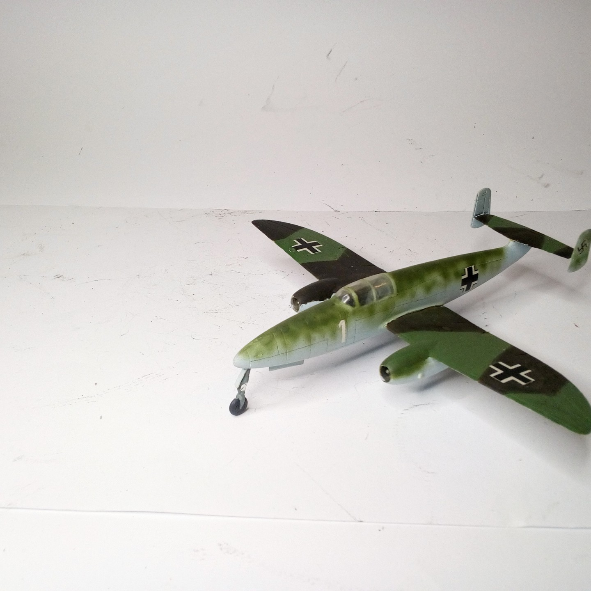

Aerei · scale model archive
Heinkel He280 1/72 Huma
Heinkel He280 1/72 Huma. The world's first true jet fighter, first powered flight on 30 March 1941 #Huma #1/72

Photo gallery

English description
The world's first true jet fighter, first powered flight on 30 March 1941
#Huma #1/72
Descrizione italiana
Il world's primo true jet figther, primo powered flight on 30 marzo 1941.